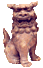
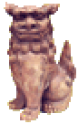
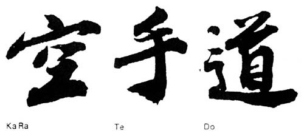

Bienvenidos
La Escuela Kyudokan
La Escuela de Karate-do Shorinryu Kyudokan de Okinawa, conocida ya como el Karate-do de la Familia Higa, es una escuela tradicional reconocida en todo el mundo por su historia, el transcurso del tiempo y por la tradicin transmitida a travs de los siglos.
El Karate-do Kyudokan, fundado por el maestro Yuchoku Higa, uno de los 10 Dan ms famosos del mundo, tiene sus bases en la antigua Escuela Shorin o sea en el Shurite (la mano de Shuri).
Se trata de una escuela tradicional pero al mismo tiempo evolutiva en el sentido que si bien se ha transmitido de generacin en generacin, enriquece constantemente su contenido tcnico, sobre todo en lo concerniente al arte del movimiento, sin perder su esencia original.
En la Ciudad de Campana, Buenos Aires, Argentina; el Profesor Cristian Lugani (2do. Dan) es representante para dicha ciudad.
